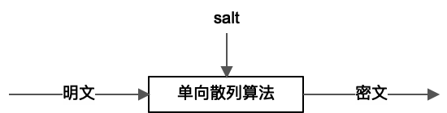
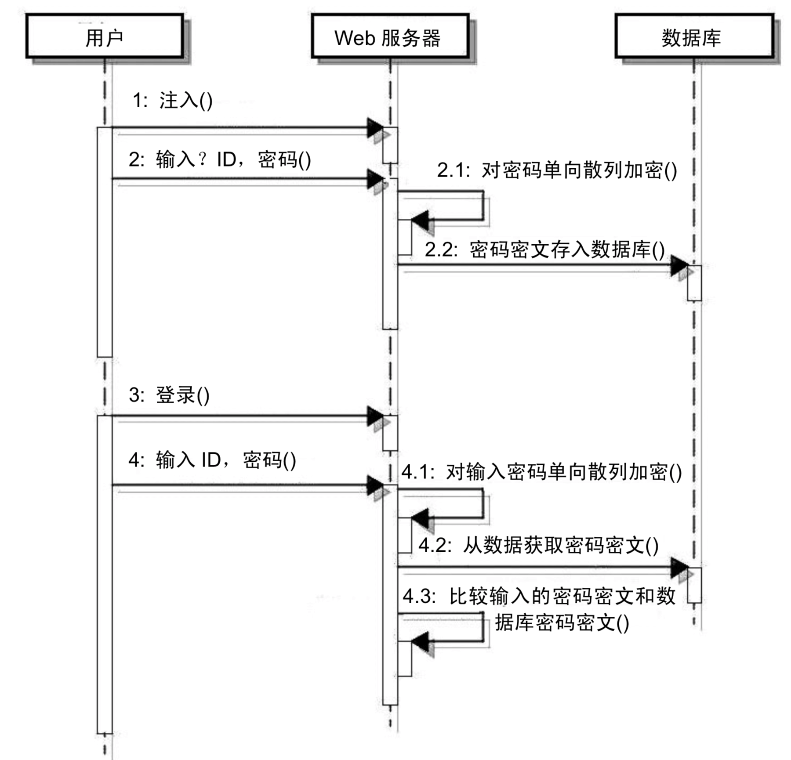
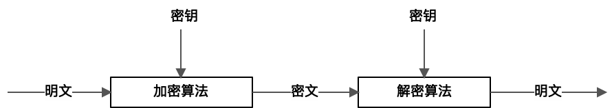
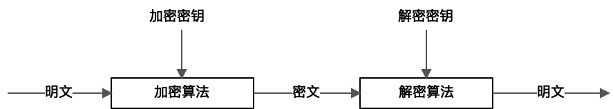
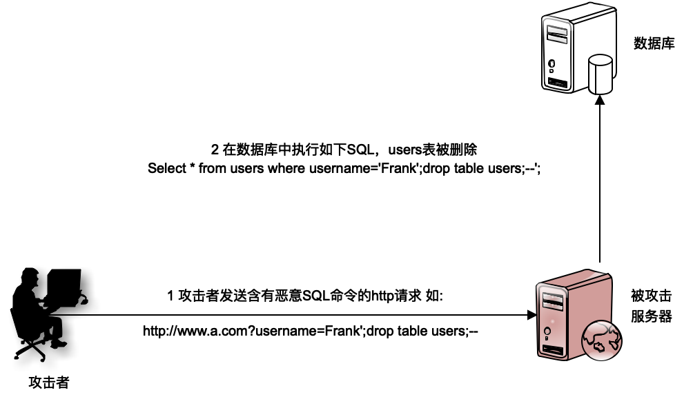
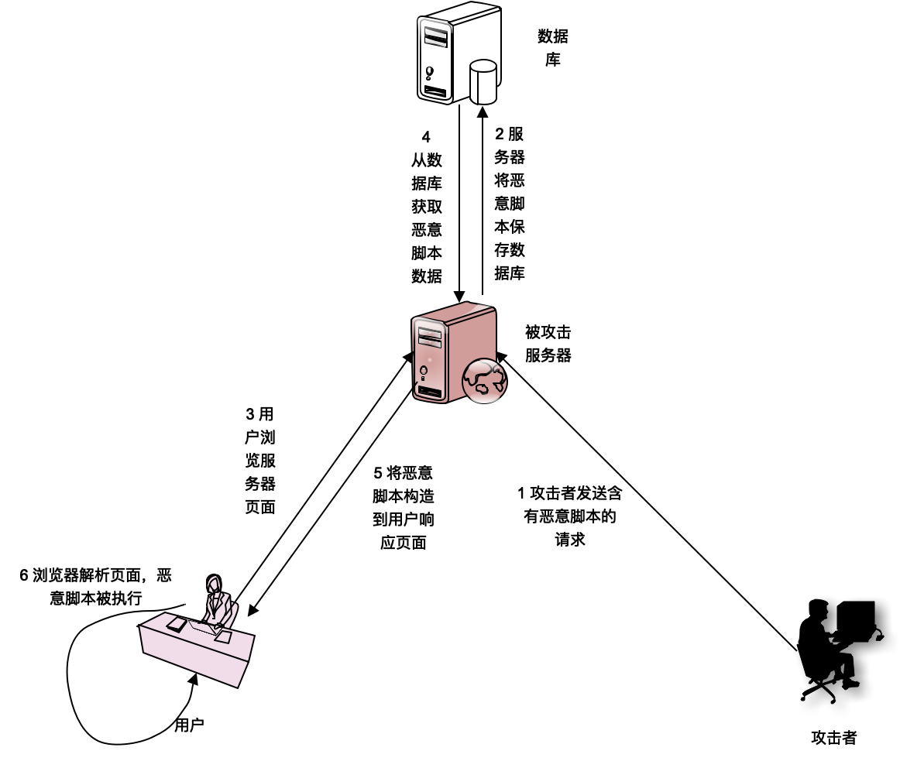

- 00 开篇词 掌握软件开发技术的第一性原理.md.html
- 01 程序运行原理：程序是如何运行又是如何崩溃的？.md.html
- 02 数据结构原理：Hash表的时间复杂度为什么是O(1)？.md.html
- 03 Java虚拟机原理：JVM为什么被称为机器（machine）？.md.html
- 04 网络编程原理：一个字符的互联网之旅.md.html
- 05 文件系统原理：如何用1分钟遍历一个100TB的文件？.md.html
- 06 数据库原理：为什么PrepareStatement性能更好更安全？.md.html
- 07 答疑 Java Web程序的运行时环境到底是怎样的？.md.html
- 07 编程语言原理：面向对象编程是编程的终极形态吗？.md.html
- 08 软件设计的方法论：软件为什么要建模？.md.html
- 09 软件设计实践：如何使用UML完成一个设计文档？.md.html
- 10 软件设计的目的：糟糕的程序员比优秀的程序员差在哪里？.md.html
- 11 软件设计的开闭原则：如何不修改代码却能实现需求变更？.md.html
- 12 软件设计的依赖倒置原则：如何不依赖代码却可以复用它的功能？.md.html
- 13 软件设计的里氏替换原则：正方形可以继承长方形吗？.md.html
- 14 软件设计的单一职责原则：为什么说一个类文件打开最好不要超过一屏？.md.html
- 15 软件设计的接口隔离原则：如何对类的调用者隐藏类的公有方法？.md.html
- 16 设计模式基础：不会灵活应用设计模式，你就没有掌握面向对象编程.md.html
- 17 设计模式应用：编程框架中的设计模式.md.html
- 18 反应式编程框架设计：如何使程序调用不阻塞等待，立即响应？.md.html
- 19 组件设计原则：组件的边界在哪里？.md.html
- 20 答疑 对于设计模式而言，场景到底有多重要？.md.html
- 20 领域驱动设计：35岁的程序员应该写什么样的代码？.md.html
- 21 分布式架构：如何应对高并发的用户请求.md.html
- 22 缓存架构：如何减少不必要的计算？.md.html
- 23 异步架构：如何避免互相依赖的系统间耦合？.md.html
- 24 负载均衡架构：如何用10行代码实现一个负载均衡服务？.md.html
- 25 数据存储架构：如何改善系统的数据存储能力？.md.html
- 26 搜索引擎架构：如何瞬间完成海量数据检索？.md.html
- 27 微服务架构：微服务究竟是灵丹还是毒药？.md.html
- 28 高性能架构：除了代码，你还可以在哪些地方优化性能？.md.html
- 29 高可用架构：我们为什么感觉不到淘宝应用升级时的停机？.md.html
- 30 安全性架构：为什么说用户密码泄漏是程序员的锅？.md.html
- 31 大数据架构：大数据技术架构的思想和原理是什么？.md.html
- 32 AI与物联网架构：从智能引擎到物联网平台.md.html
- 33 区块链技术架构：区块链到底能做什么？.md.html
- 33 答疑 互联网需要解决的技术问题是什么？.md.html
- 34 技术修炼之道：同样工作十几年，为什么有的人成为大厂架构师，有的人失业？.md.html
- 35 技术进阶之道：你和这个星球最顶级的程序员差几个等级？.md.html
- 36 技术落地之道：你真的知道自己要解决的问题是什么吗？.md.html
- 37 技术沟通之道：如何解决问题？.md.html
- 38 技术管理之道：你真的要转管理吗？.md.html
- 38 答疑 工作中的交往和沟通，都有哪些小技巧呢？.md.html
- 加餐 软件设计文档示例模板.md.html
- 结束语 期待未来的你，成为优秀的软件架构师.md.html
- 捐赠
30 安全性架构：为什么说用户密码泄漏是程序员的锅？
系统安全是一个老生常谈又容易被忽视的问题，往往只有在系统被攻击了，数据泄漏了，才会关注软件安全问题。互联网应用因为要向全球用户提供服务，在任何地方都可以访问互联网应用，任何恶意的用户可以在世界任何地方对互联网系统发起攻击，因此互联网系统又具有天然的脆弱性。
在互联网各种安全问题中，最能引发话题，刺激大众神经的就是用户密码泄露。数据库被拖库，导致所有的数据泄露，这种系统安全问题涉及的因素可能有很多，大部分都和开发软件的程序员没有关系。但是因为数据库被拖库，黑客直接获得了用户密码等敏感信息，导致用户密码泄露就是程序员的责任了。
数据加解密
通过对用户密码、身份证号、银行卡号等敏感数据加密，保护数据安全，是软件安全性架构的一部分，是程序员和架构师的责任。
软件开发过程中，主要使用的加密方法有三种：单向散列加密、对称加密和非对称加密。
用户密码加密通常使用的是单向散列加密。所谓的单向散列加密是指对一串明文信息进行散列（hash）加密，得到的密文信息是不可以被解密的，也就是说给定一个密文，即使是加密者也无法知道它的明文是什么的，加密是单向的，不支持解密。

单向散列加密事实上是一种hash算法。我们熟悉的MD5算法就是一种单向散列加密算法，单向散列算法虽然无法通过对密文进行解密计算，还原得到原始明文。但是，如果知道了算法，就可以通过彩虹表的方法进行破解。彩虹表是常用明文和密文的映射表，很多人喜欢用生日做密码，其实生日的组合是非常有限的，轻易就可以建一个生日和密文的映射表。如果黑客得到了密文，可以通过查表的办法得到密码明文。
因此在实践中，使用单向散列算法加密，还需要在计算过程中加点“盐”salt，如果黑客不知道加的“盐”是什么，就无法建立彩虹表，还原得到明文。
单向散列加密的主要应用场景就是应用到用户密码加密上。加密和密码校验过程如下：

用户在注册的时候需要输入密码，应用服务器得到密码以后，调用单向散列加密算法，对密码进行加密，然后将加密后的密文存储到数据库中去。用户下一次登录的时候，在客户端依然需要输入密码，而用户输入的密码发送到Web服务器以后，Web服务器对输入的密码再进行一次单向散列加密，得到密文，然后和从数据库中取出来的密文进行对比，如果两个密文是相同的，那么用户的登录验证就是成功的。通过这种手段，可以保证用户密码的安全性，即使数据库被黑客拖库，也不会泄漏用户密码。
密码加密的时候也需要加点“盐”，这种场景下，每个用户加密的“盐”都可以不同，比如用用户的ID作为盐，这样可以增加破解的难度。
另一种加密手段是对称加密。
对称加密，顾名思义，就是使用一个加密算法和一个密钥，对一段明文进行加密以后得到密文，然后使用相同的密钥和对应的解密算法，对密文进行解密，就可以计算得到明文。对称加密主要用于加密一些敏感信息，对密文进行信息传输和存储，但是在使用的时候，必须要解密得到明文信息的一些场景。

比如说用户的信用卡卡号，很多互联网电商网站支持用户使用信用卡进行支付。但如果直接把信用卡号、有效期、安全码存储在数据库中是比较危险的，所以必须对这些信息进行加密，在数据库中存储密文。但是在使用的时候又必须要对密文进行解密，还原得到明文，才能够正常使用。所以这个时候就要使用对称加密算法，在存储的时候使用加密算法进行加密，在使用的时候使用解密算法进行解密。
还有一种加密被称作非对称加密。所谓的非对称加密是指在加密的时候使用一个加密算法和一个加密密钥进行加密，得到一个密文。在解密的时候，必须使用解密算法和解密密钥进行解密才能够还原得到明文，加密密钥和解密密钥完全不同。通常加密密钥被称作公钥，解密密钥被称作私钥。

非对称加密的典型应用场景，就是我们常见的HTTPS。用户在客户端进行网络通讯的时候，对数据使用加密密钥即公钥和加密算法进行加密，得到密文。到了数据中心的服务器以后，使用解密密钥即私钥和解密算法进行解密，得到明文。
由于非对称加密需要消耗的计算资源比较多，效率也比较差，HTTPS并不是每次请求响应都用非对称加密，而是先利用非对称加密，在客户端和服务器之间交换一个对称加密的密钥，然后每次请求响应都用对称加密。这样，用非对称加密保证对称加密密钥的安全，再用对称加密密钥保证请求响应数据的安全。
使用非对称加密，还可以实现数字签名。用数字签名的时候是反过来的，自己用私钥进行加密，得到一个密文，但是其他人可以用公钥将密文解开，因为私钥只有自己才拥有，所以等同于签名。一段经过自己私钥加密后的文本，文本内容就等于是自己签名认证过的。我在后面要讲到的区块链架构中，交易就使用非对称加密进行签名。
HTTP攻击与防护
互联网应用对外提供服务主要就是通过HTTP协议，任何人都可以在任何地方通过HTTP协议访问互联网应用，因此HTTP攻击是黑客攻击行为中门槛最低的攻击方式，也是最常见的一种互联网攻击。而HTTP攻击中，最常见的是SQL注入攻击和XSS攻击。
SQL注入攻击就是攻击者在提交的请求参数里面，包含有恶意的SQL脚本。如下：

如果在Web页面中有个输入框，要求用户输入姓名，普通用户输入一个普通的姓名Frank，那么最后提交的HTTP请求如下：
http://www.a.com?username=Frank
服务器在处理计算后，向数据库提交的SQL查询命令如下：
Select id from users where username='Frank';
但是恶意攻击者可能会提交这样的HTTP请求：
http://www.a.com?username=Frank';drop table users;--
即输入的uername是：
Frank';drop table users;--
这样，服务器在处理后，最后生成的SQL是这样的：
Select id from users where username='Frank';drop table users;--';
事实上，这是两条SQL，一条select查询SQL，一条drop table删除表SQL。数据库在执行完查询后，就将users表删除了，系统崩溃了。
SQL注入攻击我在[第6篇]讲到过，最有效的防攻击手段是SQL预编译。Java开发的话最好使用PrepareStatement提交SQL，而MyBatis等ORM框架主要的SQL提交方式就是用PrepareStatement。
XSS攻击即跨站点脚本攻击，攻击者构造恶意的浏览器脚本文件，使其在其他用户的浏览器上运行，进而进行攻击。

攻击者发送一个含有恶意脚本的请求给被攻击的服务器，比如通过发布微博的方式向微博的服务器发送恶意请求，被攻击的服务器将恶意脚本存储到本地的数据库中，其他的正常用户通过被攻击的服务器浏览信息的时候，服务器会读取数据库中含有恶意脚本的数据，并向其展现给正常的用户，在正常用户的浏览器上执行，从而达到攻击的目的。
XSS攻击防御的主要手段是消毒，检查用户提交的请求中是否含有可执行的脚本，因为大部分的攻击请求都包含JS等脚本语法，所以可以通过HTML转义的方式，对比较有危险的脚本语法关键字进行转义。比如把“>”转义为“>”，HTML显示的时候还是正常的“>”，但是这样的脚本无法在浏览器上执行，也就无法达到攻击的目的。
由于HTTP攻击必须以HTTP请求的方式提交到服务器，因此可以在服务器的入口统一进行拦截，对含有危险信息的请求，比如drop table，JS脚本等，进行消毒转义，或者直接拒绝请求。即设置一个Web应用防火墙，将危险请求隔离。
针对Web应用防火墙，我们可以自己开发一个统一的请求过滤器进行拦截，也可以使用ModSecurity（http://www.modsecurity.org/）这样的开源WAF（Web Application Firewall）。
小结
硬件指令和操作系统可能会有漏洞，我们使用的各种框架和SDK可能也有漏洞，这些漏洞从被发现，到被公开，再到官方修复漏洞，可能会经过一个或长或短的时间，这个时间内就可能被掌握这些漏洞的黑客利用，攻击系统。
这种漏洞在官方修复之前，我们基本没有办法应对。但是黑客攻击也不是无意义的攻击，而是为了各种利益而来，很多时候是针对数据而来，做好数据加密存储与传输，即使是数据泄露了，黑客无法对数据解密，利用数据获利，也可以保护我们的数据资产。
同时加强请求的合法性检查，避免主要的HTTP攻击，及时更新生产环境的各种软件版本，修复安全漏洞，提高黑客攻击的难度，使其投入产出不成比例，从而营造一个相对安全的生产环境。
思考题
除了文中提到的HTTP攻击方式，还有哪些比较常见的HTTP攻击？对应的防护手段有哪些？
欢迎你在评论区写下你的思考，也欢迎把这篇文章分享给你的朋友或者同事，一起交流。
© 2019 - 2023 Liangliang Lee. Powered by gin and hexo-theme-book.